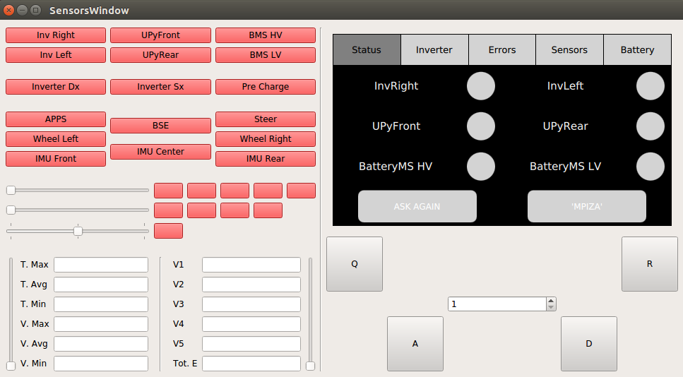

Simulatore Sensori¶
Qui troverai una breve guida su come utilizzare il simulatore dei sensori dell’auto e, se necessario, su come modificare il software.
Avviare il Simulatore¶
Prima di tutto, accertarsi di avere la struttura corretta dei file:
- Cartella iniziale
- Volante
- build
- SimulatoreSensori
- build
Le cartelle build sono necessarie quindi, se non sono presenti, bisogna crearle (e lasciarle vuote).
Per avviare il simulatore, andare nella cartella “SimulatoreSensori” e avviare il file ./deploy.sh. Questo script complierà il software e lo eseguirà.
Utilizzare il Simulatore¶
L’utilizzo del simulatore avviene attraverso l’utilizzo dei bottoni presenti nell’interfaccia. I pulsanti sulla sinistra sono utilizzati per modificare lo stato dell’auto, simulando quindi un ipotetico stato in cui essa si può trovare. I pulsanti sulla destra sono quelli che si trovano effettivamente sul volante, che sono quindi utilizzati per muoversi nei menu. E’ presente anche il manettino, sotto forma di textbox numerica (che accetta solamente valori da 1 a 8).
Funzioni dei pulsanti:
- Q: Utilizzato per muoversi tra le varie tab del volante;
- A: Utilizzato per richiedere informazioni all’auto (o, in questo caso, al simulatore);
- D: Utilizzato per accendere l’auto (nella tab iniziale)
- R: Al momento non utilizzato
Note
Le funzioni dei pulsanti dipendono da tab a tab, e potrebbero cambiare in futuro.
Modificare il codice¶
Warning
Il codice del simulatore è stato scritto da Davide Farina e Lorenzo Gasperotti. Per ora, se c’è qualcosa da modificare, parlare direttamente con loro. Questa sezione verrà riempita in futuro.